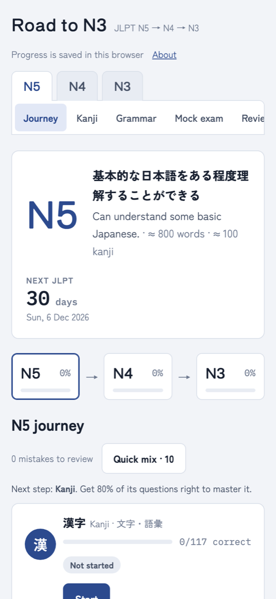

Study app · JLPT N5 → N3
Road to N3
A JLPT study site that tells you why you got it wrong, not just that you did.
The JLPT has beaten me twice, and a score never told me why. So I built the thing I wanted: every wrong answer is tagged with the trap it set, and the app tracks which traps keep catching me.
Why I miss
Each wrong option is tagged with its trap: vowel length, look-alike kanji, translation trap, particle role. Fast-and-wrong means a wrong belief; slow-and-right means recall is still fragile.Real test format
Kanji, vocabulary, grammar, sentence order, reading and listening, plus timed mock exams scored on the 180-point scale with the real pass line.254 grammar points
Minna no Nihongo I and II in lesson order, and N3 grammar by theme, each with its own questions.Look-alike kanji
122 kanji in 47 groups that people mix up (休 体 本 木, 間 聞 問 開 閉), each with its parts and a memory story.Noisy listening
Recorded voices, with optional exam-room, café or street noise underneath, because the real listening room is never silent.Claude coach
Optional: bring your own Claude API key and it explains the pattern behind your real mistakes. The key never leaves your browser.
HTML + ES modulesNo build stepWeb AudioVOICEVOXClaude APICloudflare
Open Road to N3
road-to-n3.ahmadleoyudanto.workers.dev